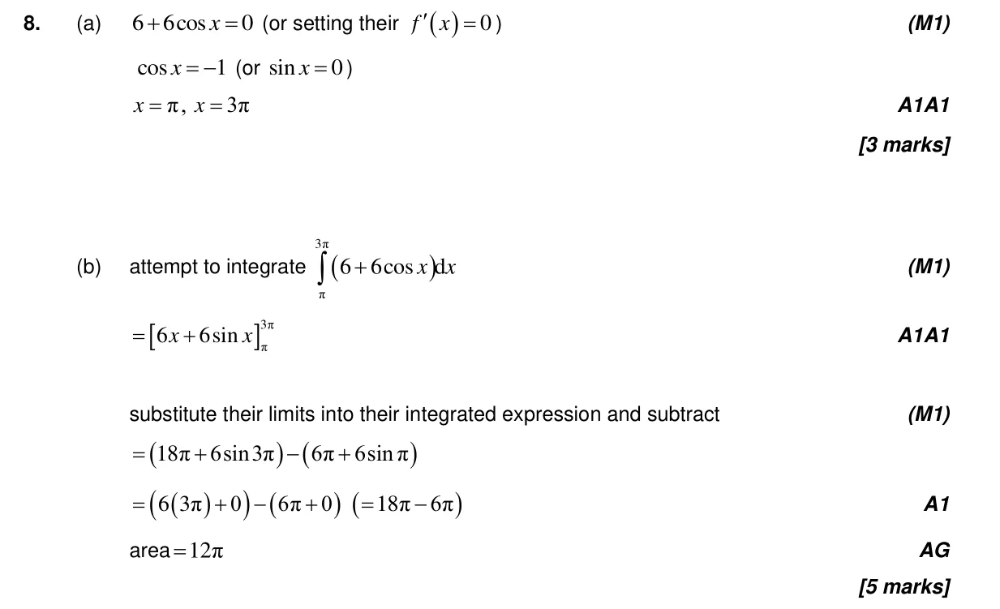
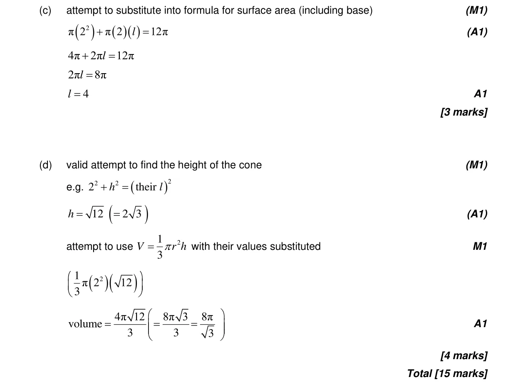

Appears in AA SL P1 Q8AA HL P1 Q10
3.1 3D space, volume, angles, distance and midpoints3.8 Solving trigonometric equations5.11 Definite integrals, areas under curve onto x-axis and areas between curves5.10 Indefinite integration, reverse chain and substitution
Question

Markscheme

